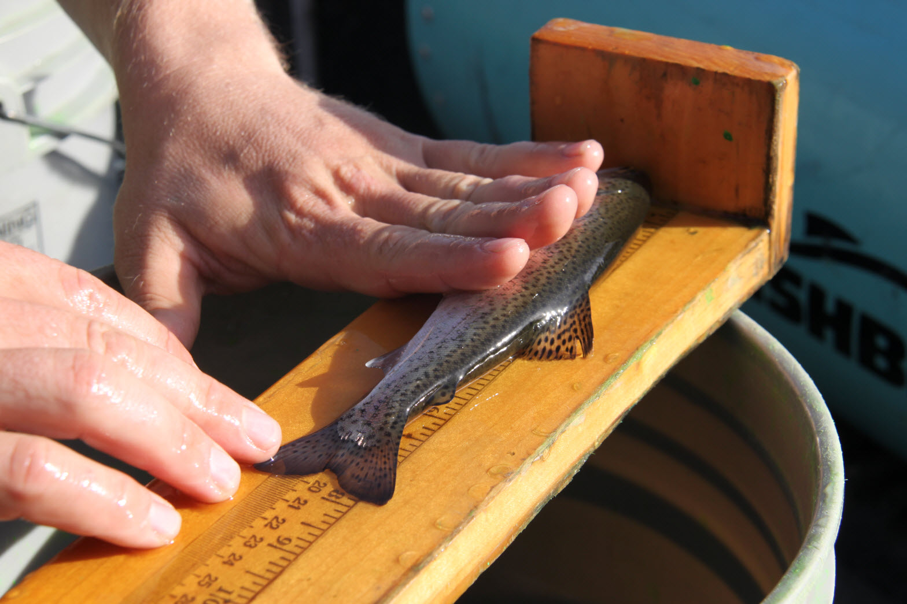
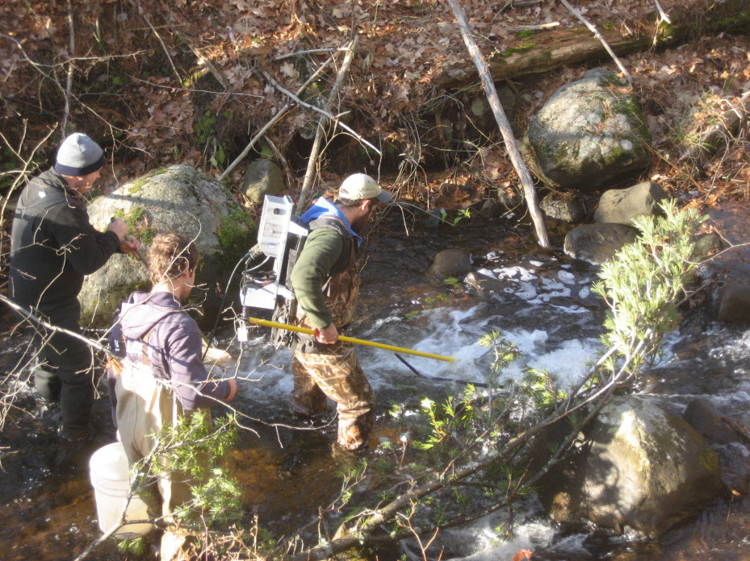

Fish length is likely the information most commonly collected by fisheries biologists and managers. While length is usually not the only information collected by a fisheries biologist, summaries of length information can provide the biologist with a wealth of information. For example, sample summaries of length information can provide insight on population parameters such as age distributions, growth rates, and mortality rates; the basic biology of the animal; and the effect of management regulations on the fish population. Thus, summarizing length data and then interpreting those summaries is an important task performed by fisheries biologists.

Whittlesey Creek is a tributary to Chequamegon Bay of Lake Superior. This stream has been severely degraded by past land use practices including clear-cut logging and channelization to drain wetlands for farming. The “Coaster” Brook Trout (Salvelinus fontinalis), a lake-dwelling stream-spawning form of Brook Trout, was largely extirpated from southern Lake Superior and the Whittlesey Creek watershed due to over-fishing and habitat degradation. In 1999, the U.S., Fish and Wildlife Service established the Whittlesey Creek National Wildlife Refuge with a primary goal of reestablishing a population of Coaster Brook Trout in Whittlesey Creek. That effort has included experimental introductions of Brook Trout at various life stages and much work to restore habitat.
In July, 2011 a quarter-mile stretch of the lower Whittlesey Creek was modified with the addition of large woody debris with attached “root balls.” The goal of this project was to alter the morphology of this section of the stream to provide better habitat and water conditions for Brook Trout. In May, 2011 a group of Northland College students conducted two days of sampling with electrofishing gear in order to provide baseline information about the fish populations in this section of the stream. Their sampling yielded eight total Brook Trout but relatively larger numbers of Coho Salmon (Oncorhynchus kisutch), Rainbow Trout (Oncorhynchus mykiss), and sculpins (primarily Slimy Sculpin (Cottus cognatus), but some Mottled Sculpin (Cottus bairdii)). Data from the catches of Coho Salmon, Rainbow Trout, and sculpins will be analyzed in this case study.

Data from the sampling collected by the students were stored in Sheet1 of the Whittlesey2011.xlsx Excel 2007 file (available from here). The variables in this data set are defined as follows,
study: The name of the study.netID: A unique label for each day of sampling.sDate: The date of sampling.run: A factor indicating if the sample was the marking or recapture run.species: A factor indicating the species captured. Options are Species1, Species2, or Species3. This variable will be discussed in more detail later.length: The total length of the sampled fish to the nearest mm.clipped: Indicates if the fish was clipped (=1) or not. All fish in the recapture run were not clipped.recap: Indicates if the fish was previously clipped (i.e., a “recapture”; =1) or not. All fish in the marking run could not possibly be a recaptured fish.notes: Any specific notes about that particular fish.
Prior to beginning this case study you should:
Sheet1 as a CSV file. Then create a script that reads the CSV file into an object in R and displays the structure and a few rows of the data.frame.